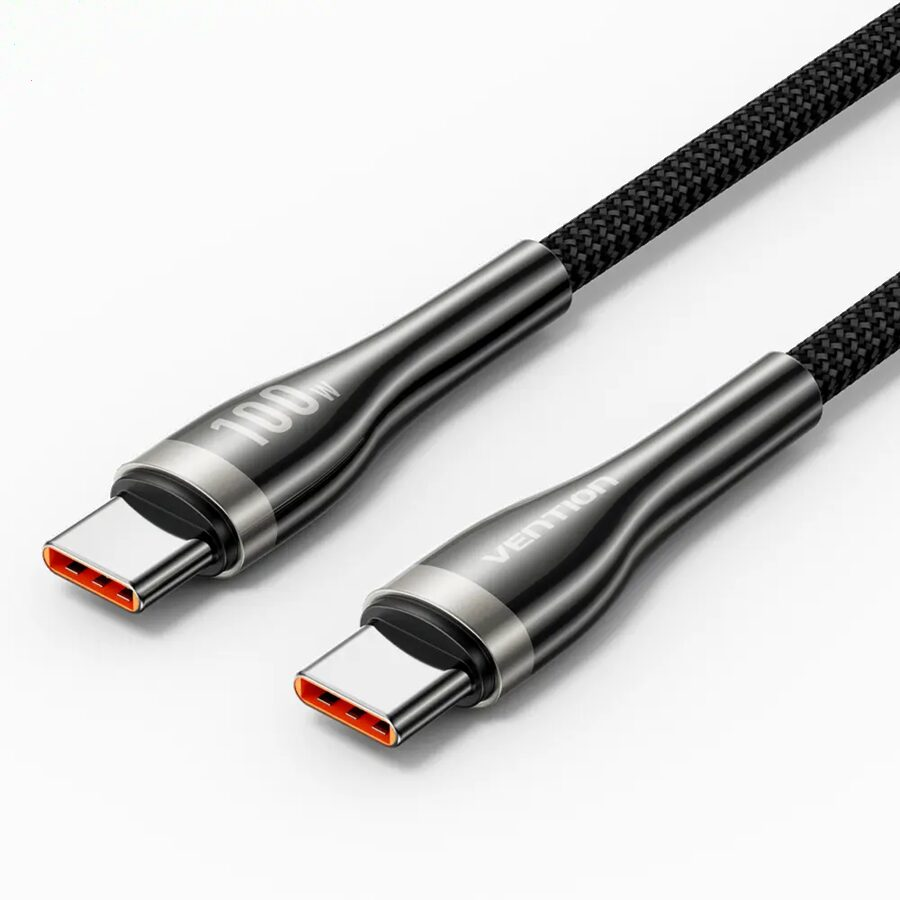

كابل UGREEN USB-C إلى USB-C بقدرة 100W
منتج متوفر ضمن كتالوج CABL، راجع المواصفات والتوافق قبل إتمام الطلب.
تصفح كابلات الشحن الأصلية للآيفون وسامسونج والأجهزة الحديثة، واختر وصلة Type-C أو USB-C بقدرة مناسبة للاستخدام اليومي والشحن السريع.
تصفح كتالوج CABL
منتج متوفر ضمن كتالوج CABL، راجع المواصفات والتوافق قبل إتمام الطلب.
منتج متوفر ضمن كتالوج CABL، راجع المواصفات والتوافق قبل إتمام الطلب.
منتج متوفر ضمن كتالوج CABL، راجع المواصفات والتوافق قبل إتمام الطلب.
تحقق من نوع المنفذ والقدرة بالواط ومعيار الشحن السريع والتوافق مع هاتفك. لا تعني القدرة الأعلى أنها مناسبة لكل جهاز؛ اتبع مواصفات الهاتف والكابل، واختر منتجًا أصليًا من علامة موثوقة.
يعرض CABL معلومات المنتج وخيارات الشحن المتاحة أثناء إتمام الطلب. يمكنك طلب شاحن جوال أونلاين والتواصل مع فريق CABL للتأكد من التوصيل إلى مدينتك في اليمن.